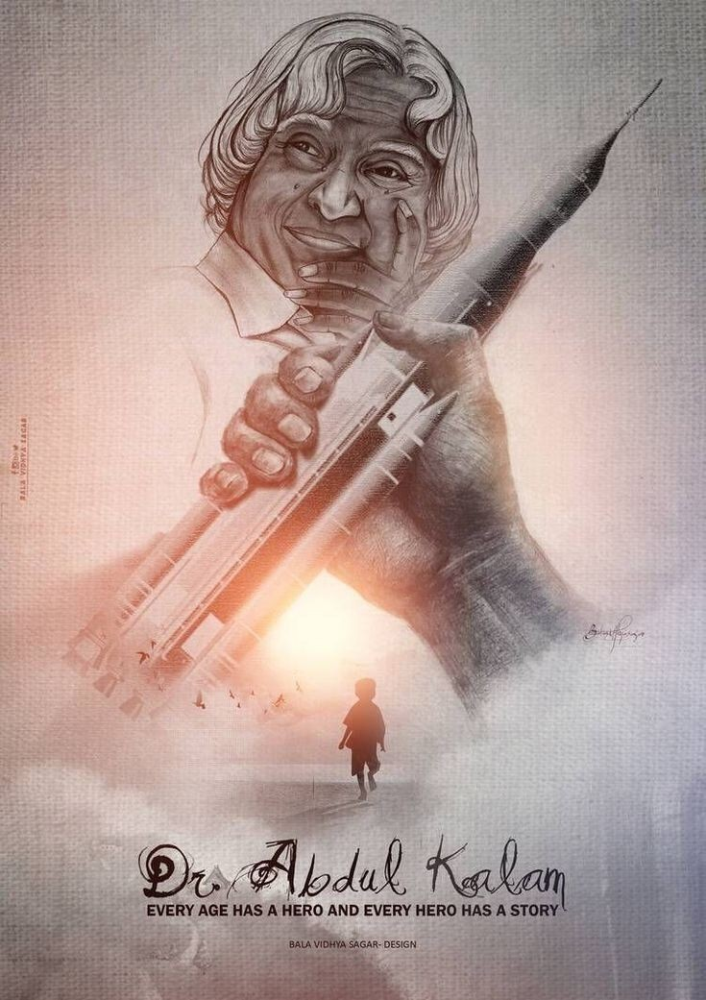
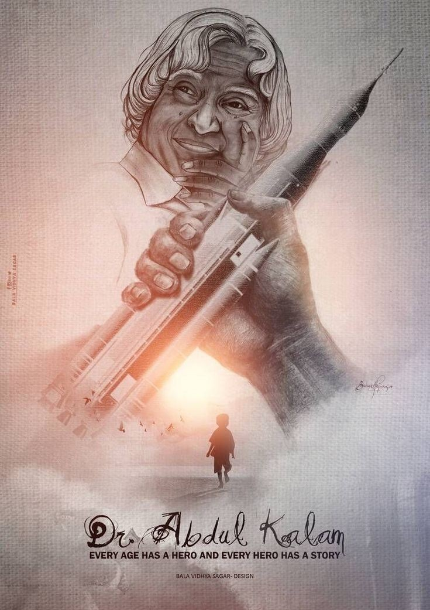

Avul Pakir Jainulabdeen Abdul Kalam (15 October 1931 – 27 July 2015) was an Indian aerospace scientist and statesman who served as the president of India from 2002 to 2007. Born and raised in a Muslim family in Rameswaram, Tamil Nadu, Kalam studied physics and aerospace engineering. He spent the next four decades as a scientist and science administrator, mainly at the Defence Research and Development Organisation (DRDO) and Indian Space Research Organisation (ISRO) and was intimately involved in India's civilian space programme and military missile development efforts. He was known as the "Missile Man of India" for his work on the development of ballistic missile and launch vehicle technology. He also played a pivotal organisational, technical, and political role in Pokhran-II nuclear tests in 1998, India's second such test after the first test in 1974. Kalam was elected as the president of India in 2002 with the support of both the ruling Bharatiya Janata Party and the then-opposition Indian National Congress. He was widely referred to as the "People's President". He engaged in teaching, writing and public service after his presidency. He was a recipient of several awards, including the Bharat Ratna, India's highest civilian honour. While delivering a lecture at IIM Shillong, Kalam collapsed and died from an apparent cardiac arrest on 27 July 2015, aged 83. Thousands attended the funeral ceremony held in his hometown of Rameswaram, where he was buried with full state honours. A memorial was inaugurated near his home town in 2017. After graduating from the Madras Institute of Technology in 1960, Kalam became a member of the Defence Research & Development Service and joined the Aeronautical Development Establishment of the Defence Research and Development Organisation (DRDO) as a scientist. During his early career, he was involved in the design of small hovercraft, and remained unconvinced by his choice of a job at DRDO.Later, he joined the Indian National Committee for Space Research, working under renowned space scientist Vikram Sarabhai. He was interviewed and recruited into Indian Space Research Organisation (ISRO) by H. G. S. Murthy, the first director of the Thumba Equatorial Rocket Launching Station. In 1969, Kalam transferred to ISRO where he became the project director of India's first satellite launch vehicle (SLV) which successfully deployed the Rohini satellite in near-earth orbit in July 1980. He had earlier started work on an expandable rocket project independently at DRDO in 1965.In 1969, Kalam received the approval from the Government of India to expand the programme to include more engineers.In 1963–64, he visited NASA's Langley Research Center in Hampton, Goddard Space Flight Center in Greenbelt, and Wallops Flight Facility.Since the late 1970s, Kalam was part of the effort to develop the SLV-3 and Polar Satellite Launch Vehicle (PSLV), both of which were successful. In May 1974, Kalam was invited by Raja Ramanna to witness the country's first nuclear test Smiling Buddha as the representative of Terminal Ballistics Research Laboratory, even though he was officially not part of the project.In the 1970s, Kalam directed two projects, Project Devil and Project Valiant, which sought to develop ballistic missiles using the technology from the successful SLV programme. Despite the disapproval of the union cabinet, then Prime Minister Indira Gandhi allotted funds for these aerospace projects under Kalam's directorship through her discretionary powers. Kalam also played a major role in convincing the cabinet to conceal the true nature of these classified projects. His research and leadership brought him recognition in the 1980s, which prompted the government to initiate an advanced missile programme under his directorship. Kalam worked with metallurgist V. S. R. Arunachalam, who was then scientific adviser to the Defence Minister, on the suggestion by the then Defence Minister R. Venkataraman on the simultaneous development of a quiver of missiles instead of taking planned missiles one after another. Venkatraman was instrumental in getting the cabinet approval for allocating ₹3.88 billion (equivalent to ₹66 billion or US$780 million in 2023) for the project titled Integrated Guided Missile Development Programme (IGMDP) and appointed Kalam as its chief executive. Kalam played a major role in the development of missiles including Agni, an intermediate range ballistic missile and Prithvi, the tactical surface-to-surface missile, despite inflated costs and time overruns. He was known as the "Missile Man of India" for his work on the development of ballistic missile and launch vehicle technology. Kalam served as the chief scientific adviser to the prime minister and secretary of the DRDO from July 1992 to December 1999. He played a key organisational, political and technical role in the Pokhran-II nuclear tests conducted in May 1998.Along with Rajagopala Chidambaram, he served as the chief project coordinator for the tests.Media coverage of Kalam during this period made him the country's best known nuclear scientist.However, the director of the site test, K. Santhanam, said that the thermonuclear bomb had been a "fizzle" and criticised Kalam for issuing an incorrect report. The claim was refuted and rejected by Kalam and Chidambaram. In 1998, Kalam worked with cardiologist Bhupathiraju Somaraju and developed a low cost coronary stent, named the "Kalam-Raju stent".In 2012, the duo designed a tablet computer named the "Kalam-Raju tablet" for usage by healthcare workers in rural areas.
On 10 June 2002, the National Democratic Alliance which was in power at the time, expressed its intention to nominate Kalam for the post of the President of India.His candidature was backed by the opposition parties including the Samajwadi Party and the Nationalist Congress Party.After the support for Kalam, incumbent president K. R. Narayanan chose not to seek a re-election. Kalam said of the announcement of his candidature: I am really overwhelmed. Everywhere both in Internet and in other media, I have been asked for a message. I was thinking what message I can give to the people of the country at this juncture. On 18 June, Kalam filed his nomination papers in the Indian Parliament, accompanied by then prime minister Atal Bihari Vajpayee and senior cabinet members.He faced off against Lakshmi Sahgal, and the polling for the presidential election was held on 15 July 2002, in the Indian parliament and the state assemblies, with the media predicting a win for Kalam. The counting was held on 18 July, and Kalam won the elections after securing 922,884 electoral votes as against the 107,366 votes won by Sahgal.He was sworn in as the 11th president of India on 25 July 2002.He was the first scientist and the first bachelor to occupy the top chair at Rashtrapati Bhawan. During his term as president, he was affectionately known as the "People's President".He later stated that signing the Office of profit bill was the toughest decision he had taken during his tenure.In September 2003, during an interactive session at PGIMER in Chandigarh, Kalam asserted the need of Uniform Civil Code in India, keeping in view the population of the country.He also took a decision to impose President's rule in Bihar in 2005.However, during his tenure as president, he made no decision on 20 out of the 21 mercy petitions submitted to him to commute death penalties, including that of terrorist Afzal Guru, who was convicted of conspiracy in the December 2001 attack on the Indian Parliament and was sentenced to death by the Supreme Court of India in 2004.He acted only on a single plea, rejecting that of Dhananjoy Chatterjee, who was later hanged. Towards the end of his term, on 20 June 2007, Kalam expressed his willingness to consider a second term in office provided there was certainty about his victory in the upcoming presidential election.His name was proposed by the United National Progressive Alliance, but he did receive the support of the ruling United Progressive Alliance.However, two days later, he decided not to contest the election again stating that he wanted to avoid involving the Rashtrapati Bhavan in the political processes. In April 2012, towards the expiry of the term of the 12th president Pratibha Patil, media reports claimed that Kalam was likely to be nominated for his second term.After the reports, social networking sites witnessed a surge in posts supporting his candidature.While the ruling Indian National Congress opposed the nomination of Kalam, other parties such as the Bharatiya Janata Party and the Trinamool Congress were reported by the media to be keen on his candidature. On 18 June 2012, Kalam declined to contest stating that: Many, many citizens have also expressed the same wish. It only reflects their love and affection for me and the aspiration of the people. I am really overwhelmed by this support. This being their wish, I respect it. I want to thank them for the trust they have in me.
Avul Pakir Jainulabdeen Abdul Kalam was born on 15 October 1931 to a Tamil Muslim family in the pilgrimage center of Rameswaram on Pamban Island, Madras Presidency (now in the Indian state of Tamil Nadu). His father, Jainulabdeen Marakayar, was a boat owner and imam of a local mosque, and his mother, Ashiamma, was a housewife. His father owned a boat that ferried Hindu pilgrims between Rameswaram and Dhanushkodi. Kalam was the youngest of four brothers and a sister in the family.His ancestors had been wealthy Marakayar traders and landowners, with numerous properties and large tracts of land. Marakayar are a Muslim ethnic group found in coastal Tamil Nadu and Sri Lanka who claim descent from Arab traders and local women. The family business had involved trading goods and transporting passengers between the Indian mainland and the Pamban Island and to and from Sri Lanka. With the opening of the Pamban Bridge connecting Pamban Island to mainland India in 1914, the businesses failed. As a result, apart from the ancestral home, the other family fortune and properties were lost by the 1920s, and the family was poverty-stricken by the time Kalam was born. As a young boy, he delivered newspapers to support the family's meager income. In his school years, Kalam got average grades but was described by his teachers as a bright and hardworking student with a strong desire to learn. He spent hours learning Mathematics.He did his schooling at Schwartz Higher Secondary School in Ramanathapuram. He then graduated in Physics from St. Joseph's College, Tiruchirappalli, in 1954. Kalam moved to Madras in 1955 to study aerospace engineering at the Madras Institute of Technology. While he was working on a class project, the Dean of the institution was dissatisfied with his lack of progress and threatened to revoke his scholarship unless the project was finished within the next three days. Kalam met the deadline, impressing the Dean, who later said to him, "I was putting you under stress and asking you to meet a difficult deadline."Later, he narrowly missed out on his dream of becoming a fighter pilot, as he placed ninth in qualifiers, and only eight positions were available in the Indian Air Force.
| Year | Award |
|---|---|
| 1981 | Padma Bhushan |
| 1990 | Padma Vibhushan |
| 1997 | Bharat Ratna |
| 1997 | Gandhi Award for National Integration |
| 2013 | Von Braun Award |
Kalam was the youngest of five siblings, the eldest of whom was a sister, Asim Zohra (d. 1997), followed by three elder brothers: Mohammed Lebbai (5 November 1916–7 March 2021),Mustafa Kalam (d. 1999) and Kasim Mohammed (d. 1995).He was close to his elder siblings and their extended families throughout his life, and would regularly send small sums of money to his older siblings, though he himself remaining a lifelong bachelor. Kalam was noted for his integrity and his simple lifestyle. He was a teetotaler, and a vegetarian. Kalam enjoyed writing Tamil poetry, playing the veena (an Indian string instrument),and listening to Carnatic devotional music every day. He never owned a television, and was in the habit of rising at 6:30 or 7 a.m. and sleeping by 2 a.m. His personal possessions included a few books, a veena, clothing, a compact disc player and a laptop. He left no will, and his possessions went to his eldest brother after his death. Kalam set a target of interacting with 100,000 students during the two years after his resignation from the post of scientific adviser in 1999. He explained, "I feel comfortable in the company of young people, particularly high school students. Henceforth, I intend to share with them experiences, helping them to ignite their imagination and preparing them to work for a developed India for which the road map is already available." His dream is to let every student to light up the sky with victory using their latent fire in the heart.He had an active interest in other developments in the field of science and technology such as developing biomedical implants. He also supported open source technology over proprietary software, predicting that the use of free software on a large scale would bring the benefits of information technology to more people.Kalam has authored various books during his career, and his books have garnered interest in various countries. In his book India 2020, he strongly advocated an action plan to develop India into a "knowledge superpower" and a developed nation by 2020. He regarded his work on India's nuclear weapons programme as a way to assert India's place as a future superpower. I have identified five areas where India has a core competence for integrated action: (1) agriculture and food processing; (2) education and healthcare; (3) information and communication technology; (4) infrastructure, reliable and quality electric power,(5) surface transport and infrastructure for all parts of the country; and self-reliance in critical technologies. These five areas are closely inter-related and if advanced in a coordinated way, will lead to food, economic and national security. Kalam described a "transformative moment" in his life in his book Transcendence: My Spiritual Experiences with Pramukh Swamiji. When he asked Pramukh Swami on how India might realise his vision of development, Swami answered to add a sixth area of developing faith in God and spirituality to overcome the current climate of crime and corruption.
 
